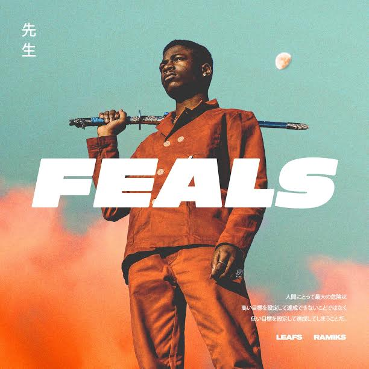

My Favorite Album's

Kid Cudi
Man on the Moon: The End of Day
- In My Dreams (Cudder Anthem) | 3:19
- Soundtrack 2 My Life | 3:55
- Simple As | 2:31
- Solo Dolo (Nightmare) | 4:26
- Heart Of A Lion (KiD CuDi Theme Music) | 4:21
- My World Ft. Billy Cravens | 4:03
- Day N Night (Nightmare) | 3:41
- Sky Might Fall | 3:41
- Enter Galactic (Love Connection Part 1) | 4:20
- Alive (Nightmare) Ft. Ratatat | 4:06
- CuDi Zone | 4:19
- Make Her Say Ft. Kanye West And Common | 3:36
- Pursuit Of Hapiness (Nightmare) Ft. MGMT And Ratatat | 4:55
- Hyyerr Ft. Chip The Ripper | 3:32
- Up Up And Away | 3:47

Travis Scott
AstroWorld
- STARGAZING | 4:31
- CAROUSEL | 3:00
- SICKO MODE | 5:13
- R.I.P SCREW | 3:06
- STOP TRYING TO BE GOD | 5:38
- NO BYSTANDERS | 3:38
- SKELETONS | 2:26
- WAKE UP | 3:52
- 5% TINT | 3:16
- NC-17 | 2:37
- ASTROTHUNDER | 2:23
- YOSEMITE | 2:30
- CAN'T SAY | 3:18
- WHO? WHAT! | 2:57
- BUTTERFLY EFFECT | 3:11
- HOUSTONFORNICATION | 3:38
- COFFEE BEAN | 3:29

Killy
Surrender Your Soul
- Surrender(Intro) | 1:18
- Killamonjaro | 2:58
- No Sad No Bad | 2:12
- Starstream* | 2:10
- Distance | 2:29
- Doomsday | 3:04
- Never Let Up | 2:31
- Deadtalks | 2:34
- Pray for Me | 2:27
- Live Your Last | 2:13
- Fireflies(Outro) | 2:22

The Weeknd
STARBOY
- Starboy ft. Daft Punk | 3:50
- Party Monster | 4:09
- False Alarm | 3:40
- Reminder | 3:39
- Rockin' | 3:53
- Secrets | 4:26
- True Colors | 3:26
- Sidewalks ft. Kendrick Lamar | 3:51
- Stargirl Interlude | 1:52
- Six Feet Under ft. Future | 3:58
- Love to Lay | 3:43
- A Lonely Night | 3:40
- Attention | 3:18
- Ordinary Life | 3:42
- Nothing Without You | 3:19
- All I Know ft. Future | 5:21
- Die For You | 4:20
- I Feel It Coming ft. Daft Punk | 4:29

Kanye West
THE LIFE OF PABLO
- Ultralight Beam | 5:20
- Father Stretch My Hands Pt. 1 | 2:15
- Famous | 3:14
- Feedback | 2:35
- Low Lights | 2:11
- Highlights | 3:19
- Freestyle 4 | 2:02
- I Love Kanye |0:44
- Waves | 3:01
- FML | 3:56
- Real Friends | 4:11
- Wolves | 3:59
- Silver Surfer Intermission | 0:56
- 30 Hours | 5:25
- No More Parties in LA | 6:14
- FACTS (Charlie Heat Version) | 3:19
- Fade | 3:14

Kid Cudi
Man on the Moon II: The Legend of Mr. Rager
- Scott Mescudi vs. The World (feat. Cee Lo Green) | 3:55
- REVOFEV | 3:03
- Don’t Play This Song (feat. Mary J. Blige) | 3:42
- We Aite (Wake Your Mind Up) | 1:26
- Marijuana | 4:20
- Mojo So Dope | 3:30
- Erase Me (feat. Kanye West?) | 3:48
- Wild’n Cuz I’m Young | 3:13
- The Mood | 4:14
- MANIAC (feat. Cage and St. Vincent?) | 2:35
- Mr. Rager | 2:58
- These Worries (feat. Mary J. Blige?) | 4:54
- The End (feat. GLC, Chip Tha Ripper, and Nicole Wray?) | 4:21
- All Along | 3:22
- GHOST! | 4:49
- Trapped in My Mind | 3:34

Leafs Sensei
Feals
- Zij + Mij | 3:55
- Alright ft. Yung Nnelg | 2:48
- Hoofd Heet | 3:42
- Shawty | 2:33
- Followed | 4:41
- Best Niet | 3:21
- Yokomokohama ft. Bokoesam | 3:48

6ix9ine
Dummy Boy
- Stoopid (feat. Bobby Shmurda) | 3:55
- Fefe (feat. Nicki Minaj and Murda Beatz) | 3:03
- Tic Toc (feat. Lil Baby) | 3:42
- Kika (feat. Tory Lanez) | 1:26
- Mama (feat. Nicki Minaj and Kanye West) | 4:20
- Waka (feat. A Boogie Wit Da Hoodie) | 3:30
- Bebe (feat. Anuel AA) | 3:48
- Mala (feat. Anuel AA) | 3:13
- Feefa (feat. Kanye West) | 4:14
- Kanga (feat. Gunna) | 2:35
- Tati (feat. DJ SpinKing) | 2:58
- Wondo | 4:54
- Dummy (feat. Trife Drew) | 4:21